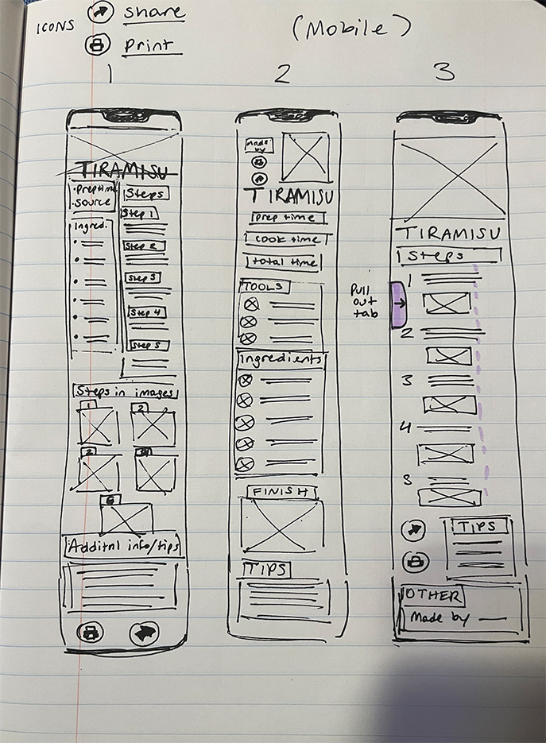
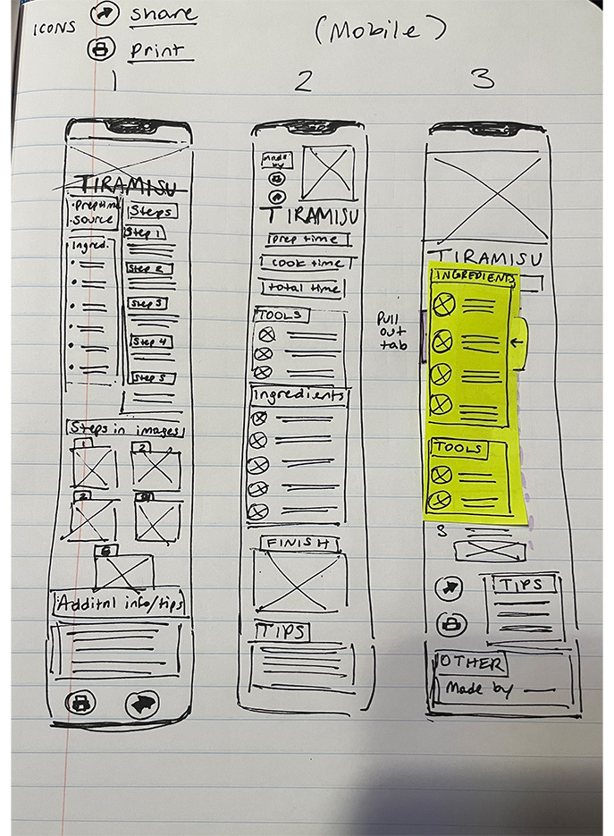

Mobile (I included two images to demonstrate "tab pull" on version 3)
 Desktop
For version 3, I wanted the ingredients (neon green post-it) to stay in place on the screen while the user scrolled through the steps. I'm not sure if that was clear in the sketches, so I wanted to clarify it here.